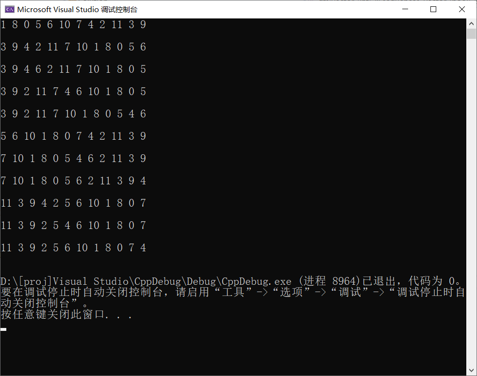

用DFS解决最终幻想13-2时钟谜题
最近在补 XGP 中的最终幻想13-2时，遇到一个时钟谜题，感觉挺有意思，就像尝试用搜索算法将其解决。
问题描述
如下图所示，有一个时钟，包含个结点，每个节点有一个数字标识，玩家最开始可以任意选择一个结点，选择后，该结点被消除且指针会指向该结点的位置，根据该节点的数字值 n 分裂为两根指针分别向顺时针方向和逆时针方向旋转 n 个的单位长度。此后每次玩家只能选择指针指向的结点，选择结点后结点被消除，两指针合并指向选择结点的位置并按上述描述进行分裂和旋转，玩家需要将所有节点消除才能胜利。
注：玩家无法选择已经被消除的结点，若分裂旋转后的两指针均位于已被消除的结点位置，则判定游戏失败。
算法思路
本问题很容易想到利用深度优先搜索来解决，选择一个结点作为开始，如第一次选择 12 点钟位置的结点，（以下为了方便，按结点在时钟中排布位置 n 称作结点 n）该结点值为 5，则选中后分别向顺时针和逆时针方向旋转到达结点 5 和 结点 7，这就产生了两个分支（相当于二叉树的左右子树），分别选择这两个结点继续搜索，若结点到达了一个已被访问过的结点（即该结点已被消除），则终止该方向上的搜索，并进行回溯，将路径上的该结点删除，并将访问标志复原。
若路径上的结点个数已经达到 12，即所有节点均被成功消除，则该路径为一个解路径，将该结果保存并回溯继续进行搜索，直到尝试了所有可能性，算法结束。
完整代码
1 |
|
结果分析
以下为示例图中问题的所有解路径，经验证，符合条件。

本博客所有文章除特别声明外，均采用 CC BY-NC-SA 4.0 许可协议。转载请注明来源 PageFault！
 微信
微信 支付宝
支付宝
相关推荐

2024-03-03
动态前缀和数组：树状数组
前缀和的不足前缀和是一种常见的算法思想，能够实现在常数时间复杂度下得到某个子区间内所有元素和。以一维数组 nums 为例，定义前缀和数组 preSum，preSum[i] 表示 nums 前 i 个元素的和，利用动态规划的思想，易得 preSum[i] = preSum[i - 1] + nums[i] 的递推关系，因此构造一个前缀和数组的时间复杂度为 O(n)，而查询前 i 个元素的和只需查询 preSum[i] 的值，为常数时间。 前缀和方法在数组元素不发生改变的情况下十分高效，但如果数组元素可能会发生改变，与朴素求和做法（不使用前缀和数组，而是直接遍历区间元素累计求和）相比，前缀和数组需要 O(n) 的时间来进行更新。这两种做法要么查询是 O(1)、更新是 O(n)，要么查询是 O(n)、更新是 O(1)，那有没有一种折衷的方案，使得查询和更新效率都不至于太低呢？本文将介绍的树状数组就符合这样的条件。 树状数组查询由正整数的二进制表示可知，任何一个正整数都可以拆分为为若干个不重复的 2 的幂之和。那么对于一个下标从 1 开始且长度为 n 的数组，它的任意下标 i (1 &...

2023-07-03
数据结构编程题 顺序表
删除最小值题目描述从顺序表中删除具有最小值的元素（假设唯一）并由函数返回被删元素的值。空出的位置由最后一个元素填补，若顺序表为空，则显示出错信息并退出运行。 解题代码123456789101112131415bool deleteMin(vector<int>& nums, int& val) { if (nums.empty()) { return false; } int minVal = INT32_MAX, minIdx = 0; for (int i = 0; i < nums.size(); ++i) { if (minVal > nums[i]) { minVal = nums[i]; minIdx = i; } } nums[minIdx] = nums.back(); val = minVal; return true;&...

2023-07-17
数据结构编程题 栈和队列
判断合法序列题目描述假设 I 和 O 分别表示入栈和出栈操作，栈的初态和终态均为空，入栈和出栈的操作序列可表示为仅由 I 和 O 组成的序列，可以操作的序列称为合法序列，否则称为非法序列。编写一个算法，判定所给的序列是否合法。若合法，返回 true，否则返回 false. 解题代码123456789101112131415bool isLegalSequence(const string& sequence) { int iCnt = 0; for (int i = 0; i < sequence.size(); ++i) { if (sequence[i] == 'I') { ++iCnt; } else { --iCnt; } if (iCnt < 0) { return false; } &...

2023-08-18
数据结构编程题 查找
二叉树定义以下为本文解题代码的二叉树定义。 123456struct TreeNode { int val; TreeNode* left, *right; TreeNode(int val = 0, TreeNode* left = nullptr, TreeNode* right = nullptr) : val(val), left(left), right(right) {}}; 递归二分查找题目描述写出二分查找的递归算法。初始调用时，left 为1，right 为 n. 解题代码1234567891011bool recurBS(vector<int>& nums, int target, int left, int right) { if (left > right) return false; int mid = (left + right) / 2; if (nums[mid] == target) return true; else if (nums[mid] > target)...

2022-05-26
人工智能作业 使用遗传算法解决旅行商问题
遗传算法（Genetic Algorithm，GA）最早是由美国的 John holland于20世纪70年代提出,该算法是根据大自然中生物体进化规律而设计提出的。是模拟达尔文生物进化论的自然选择和遗传学机理的生物进化过程的计算模型，是一种通过模拟自然进化过程搜索最优解的方法。本文利用遗传算法解决经典的NP问题——旅行商问题，并加深对该算法的理解。 问题描述有若干个城市，每个城市给定一个坐标，一个旅行商需要经过每个城市各一遍且不能重复经过城市，起点可以任意选择，求旅行商经过所有城市的总距离的最小值及其最优路径。 数据结构与算法设计数据结构设计 struct point 从文本提取的城市的坐标数据，包含 id, x, y. const int idNum = 100; // 种群个体数 表示种群的个体数目，即每次迭代所包含的数据的个数。 const double variProbability = 0.05; // 变异概率 遗传过程可能导致变异，变异次数 = 变异概率 * 种群个体数。 vector<point> coords; // 各点坐标 从文本...

2022-01-16
LeetCode周赛总结 第276场
本次周赛相对比较简单，前三题花的时间比较短，但无奈最后一题还是没思路。。。 将字符串拆分成若干长度为 k 的组题目链接将字符串拆分成若干长度为 k 的组 解题思路遍历字符串 s 的每个字符并加入到一个临时字符串中，当此临时字符串长度为 k 时，加入到结果数组中并清空此字符串。若此时遍历到字符串的最后一个字符且此时临时字符串长度没有达到 k 时，则向其末尾填入字符 fill 直到临时字符串长度达到 k，再加入到结果数组中。 解题代码123456789101112131415161718192021class Solution {public: vector<string> divideString(string s, int k, char fill) { vector<string> res; string newStr; for (int i = 0; i < s.size(); i++) { newStr += s[i]; i...